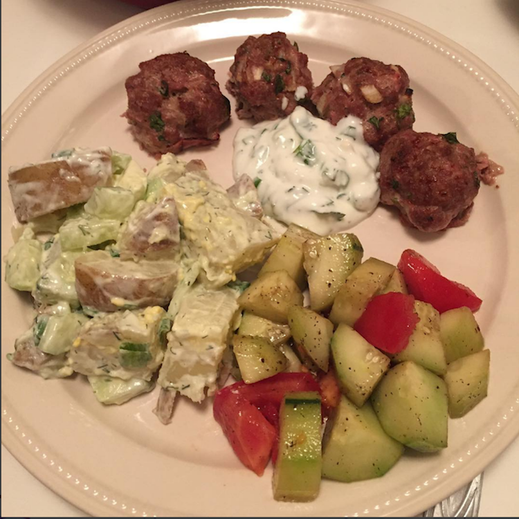
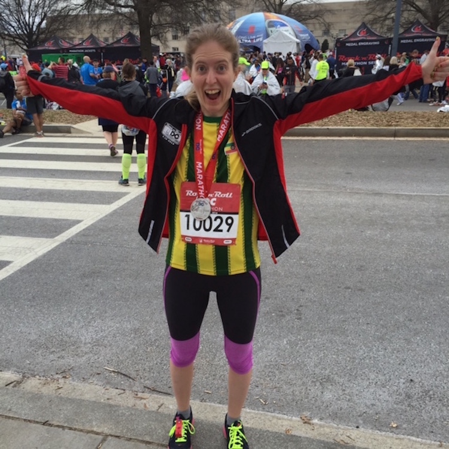
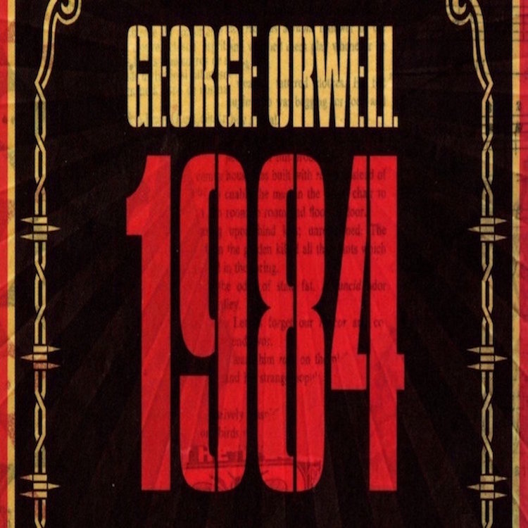

Belorussian Potato Salad
The humble potato occupies a special place in Belarusian cooking and culture - featuring in numerous dishes, and even in the well-known traditional folk song and dance “Bulba” (Potato).Perhaps ironically, one of the dishes I most fondly remember from my three visits to Belarus features...
Read more

Rock n Roll DC
I’ve always wanted to know what I could do in a marathon where everything went right. At the Rock n Roll DC Marathon on March 2016, I finally got to find out.In March 2015, for my 27th birthday, I bought a $50 entry to the DC Rock n Roll marathon, as a present to myself...
Read more

2016: My Year In Books
My goal for 2016 was to read 36 books - 3 per month. Came close to reading 4 per month - read 46 books in the past year! My 2016 reading list, in chronological order:1. Small Giants: Companies that Choose to Be Great Instead of Big. Bo Burlingham.2. The Beautiful Things That Heaven...
Read more